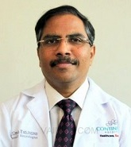

Dr. Umesh T
QUALIFICATIONS
Consultant , MBBS, DM, MD, DNB, 27 years of experience
ABOUT DOCTOR
Currently associated as consultant with Department of Neurology, Continental Hospitals, Hyderabad
Expertise in stroke and epilepsy management
Interests are Vascular Brain Diseases, Neurophysiology, Neuromuscular Diseases, Neurological dysfunction, Multiple sclerosis, Movement Disorder, Motor coordination, Repair CSF Rhinorrhea, Functional sclerotherapy and Fibromyalgia
Attended many world congress in neurology, Epilepsy and Controversies in Neurology
Member of various renowned societies such as Indian Epilepsy Society and Neurology Society of India
SPECIALIZATION :
Vascular Brain Diseases, Neurophysiology, Neuromuscular Diseases, Neurological dysfunction, Multiple sclerosis, Movement Disorder, Motor coordination, Repair CSF Rhinorrhea, Functional sclerotherapy and Fibromyalgia
WORK EXPERIENCE
Consultant, Continental Hospitals, Hyderabad
Consultant, Owaisi Hospital and Research Centre, 2014
Consultant, Wokhardt’s Kamineni Hospital, 2009
Consultant, YASHODA HOSPITAL, 2007
List Of Treatments
Temporal Lobectomy,
Lesionectomy,
Hemispherectomy,
Corpus Callosotomy,
Vagus Nerve Stimulation,
Multiple Subpial Transections MST,
VP Shunting,
Ventriculostomy,
Skull Base Surgery,
Sleep Disorders,
Restless Leg Syndrome Treatment,
Narcolepsy Treatment,
Headache,
Multiple Sclerosis Treatment,
Chronic Cerebro Spinal Venous Insufficiency Treatment,
Liberation Treatment,
Sensory Ataxia Treatment,
Carotid Endarterectomy,
Cerebral Angioplasty,
Cerebral or Brain Aneurysm Treatment,
Endovascular Coiling,
Surgical Clipping,
Brain Tumor Surgery,
...show all.